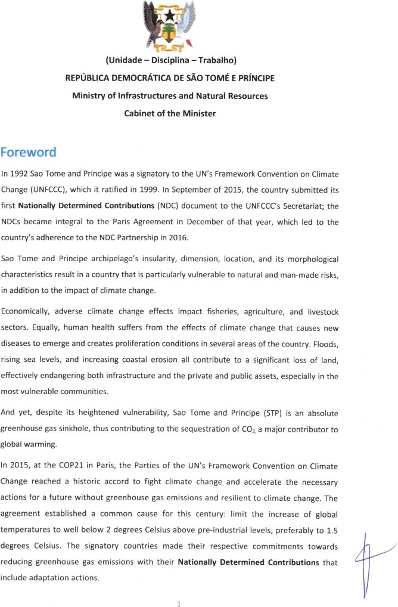
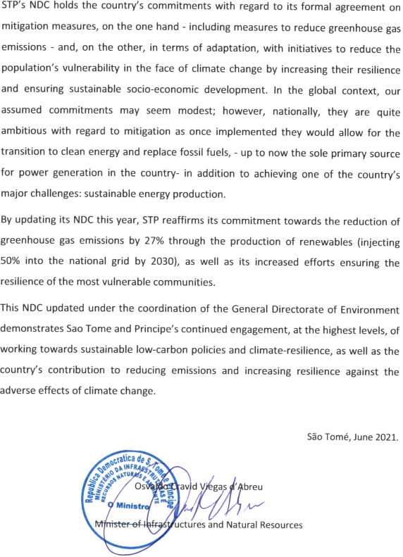

Nationally Determined Contributions (NDC-STP) Updated
São Tomé, 2021
This NDC update has been possible thanks to the technical and financial support by:


Sao Tome and Principe (short, STP) is an African small island developing state (SIDS). Located in the Gulf of Guinea, the country is composed of two islands and various smaller islands and islets, with a total area of 1001 km2. Today, the country’s population stands at about 215,000, with 65% living below the poverty threshold and about 30% lives without electricity. In 2019 the unemployment rate was close to 13.4%, while GDP growth stood at 4.5%, underlining its insufficiency in fulfilling the developmental needs. More than 90% of the State General Budget originates from external aid, and the debt level is also very high, at about 70% of GDP. These physical and socio-economic susceptibilities make Sao Tome and Principe very vulnerable to adverse climatic events.
STP’s high vulnerability is in deep contrast to its greenhouse gas emissions (GHG) emission status since its territory is as an absolute carbon sink contributing to global CO2 removals. In September 2015, STP communicated its Intended Nationally Determined Contributions (INDC) under the Paris Agreement. In addition, as a member of the Paris Agreement, STP will follow its transparency requirements; in other words, STP will participate in international biennial reporting and review cycles regarding GHG emissions, NDC implementation, as well as updating its NDC every five years. Consequently, STP’s participation in the Paris Agreement and the implementation of its ambitious NDC measures will require financial resources from external sources, access to technology, and training.
The approved 2006 National Adaptation Programme of Action (NAPA), in conjunction with the 2015 INDC and other documents produced in recent years - in the absence of the National Adaptation Plan (NAP) - constitute the basis for the country’s presentation of this revised and updated NDC proclaiming a broad sectoral approach with more ambitious measures and goals in relation to the 2015 NDC. Equally, STP will adopt an enhanced MRV (Measurement, Reporting and Verification) system guaranteeing transparency and co-ordination within the Paris Agreement framework and strengthening its capabilities in data gathering and revision, consolidating its institutional framework, including the strengthening of the National Climate Change Committee and training of its members. STP seeks the acceleration of its NDC implementation in line with its Sustainable Development Objectives (SDGs) agenda.
With the support of the NDC Partnership, the Government of STP elaborated in 2018 the NDC Implementation Plan to advance the mitigation and adaptation components of its NDC. The NDC Implementation Plan builds off national and sectoral priorities and was designed through an economy- wide and whole-of-society approach including government institutions, NGOs, private sector, international partners, and academia. The Plan serves as a planning, coordination, transparency, and resource mobilization tool for the Government and is being implemented with the support of national and international stakeholders.
STP’s nationally determined contribution (NDC), under the terms of Article 4 of the Paris Agreement, represents a commitment towards mitigation and adaptation. Moreover, STP is set to track mitigation and adaptation proposals following the requirements of the Enhanced Transparency Framework (ETF) foreseen in Article 13 of the Paris Agreement, detailed in decision 18/CMA 1. By implementing its contribution, STP offers the international community an alliance with its national objectives of both a post-COVID-19 pandemic green recovery and an opportunity to consolidate a more prosperous future by taking advantage of vast opportunities in pursuing low-carbon and resilient development.
The present NDC adheres to information, clarity, transparency and understanding (ICTU) requirements, in line with decision 4/CMA 1 as adopted at the 24th Conference of the Parties (COP 24).
STP’s updated NDC is more ambitious and presents improvements in relation to its 2015 NDC (GHG reduction was at 57 ktCO2eq). In fact, mitigation contributions, with a total GHG reduction goal of 109 ktCO2eq, represent additional reduction of these gases of approximately 90% (equivalent to about 51 ktCO2eq). This increase in ambition is reflected also by the increase in the number of measures set forth in relation to mitigation, adaptation, and cross-sectoral measures. The number of measures rose from 18 to 29 compared to 2015, especially targeting the increase of renewable energy generation from 26 MW to 49 MW, as well as the increase in energy efficiency. The number of sectors covered is more comprehensive as they now include the energy, transport, fishery, agriculture, livestock farming, forestry, water, and waste sectors civil protection.
The elaboration of this updated NDC is the result of a participatory and consultative process involving key ministries, public and private sectors stakeholders, experts, civil society organisations as well as marginalised and vulnerable groups.
NDCs – Nationally Determined Contributions (NDC-STP)
The mitigation measures currently identified as contributions by STP are:
An increase in renewable energy share integrated in the national grid;
a reduction in power grid losses and increase of energy efficiency; and,
a significant reduction in the transport sector’s carbon footprint.
With the implementation of these measures, STP will be able to contribute towards an estimated GHG emissions reduction of 109 kTCO2eq, corresponding to a 27% emission reduction by 2030, with a total estimated cost of close to USD 150M.
The goal to reduce emissions is conditional to the availability and mobilization of external funding with the aim of reducing projected emissions in the business-as-usual (BAU) scenarios by 2030. The projected emissions are comprehensive for the entire country and cover all economic sectors, excluding the land-use, land-use change, and forestry (LULUCF) sector given the country’s climate neutrality estimated in initial GHG emissions inventory calculations.
With regard to adaptation, the NDC implementation plan’s objective is to reduce climate-related risks and increase the resilience of communities and sectors by strengthening technical and institutional capacities, mainstreaming climate resilience into national and subnational planning and budgeting, and several investments.
The plan covers the agriculture, livestock, forestry, energy, transport, coastal zones, fisheries, water and the civil protection sectors.
Based on data from the NDC-STP, on its implementation plan and on the implementation of other national plans, stakeholders have identified the priority measures; their reformulation and integration embedded in a set of programmatic actions, as presented in the table in Chapter V, as well as its quantifiable goals. The latter will be made available in the NAP as of 2023.
Taking into consideration the national circumstances together with its financial incapacity to implement mitigation, adaptation and cross-cutting measures contained in its updated NDC, STP will need to resort to international financing in the form of grants or concessions to enable the country to comply with its updated NDC. Recourse to these financial mechanisms -- created or implemented by the UNFCCC, by the Paris Agreement and by development partners- serve to promote the elaboration and implementation of projects and programmes, technological transfer, and capacity-building.
The cost of reaching STP’s NDC’s mitigation goals is estimated at 150 million USD. This estimate solely covers project and programme implementation and does not include policy implementation, studies, nor the elaboration of preliminary studies to inform projects and programmes. The cost of implementing adaptation measures will be detailed in STP’s future National Adaptation Plan (NAP). This document will develop follow-up, monitoring and transparency verification mechanisms with regard to the use of financial flows.
Other instruments, to be communicated to the Convention and under the Paris Agreement - BURs, NCs, BTRs and NDCs - will also report on the needs on international co-operation support received, as well as on its utilization, and they will be based on a robust and transparent national methodology enabling continuous and consistent monitoring.
With these tools and initiatives, Sao Tome and Principe will develop its long-term climate finance strategy based on the correct identification of its needs and priorities.
|
1. QUANTIFIABLE INFORMATION ON REFERENCE POINTS (INDICATING A REFERENCE YEAR, IF APPLICABLE): |
||||
|
a) Reference year(s), base year(s), reference period(s) or other starting point(s) |
It is understood that there is no base year and that the results will be compared to BAU scenarios, by 2030, effected on the basis of the last GHG inventory of 2012. |
|||
|
b) Quantifiable information on reference indicators, their values in the reference year(s), base year(s), reference period(s) or other starting point(s) and, as applicable, in the target year |
The type of contribution chosen by Sao tome and Principe is based on estimated results for the reduction of GHG emissions below BAU levels by 2030. In 2012, these emissions stood at approx. 154 GgCO2eq, while BAU projections indicate that by 2030 these emissions could reach 400 ktCO2eq, maintained the projected growth parametres adopted. To date the following measures were identified under STP’s contribution:
By implementing these measures, STP will be able to contribute toward reducing GHG emissions by close to 109 GgCO2eq, corresponding to about 27% of emissions reduction by 2030. |
|||
|
c) For strategies, plans and actions referred to in Article 4, paragraph 61 of the Paris Agreement, or policies and measures as components of NDCs where paragraph 1(b) above is not applicable, Parties to provide other relevant information |
Sao Tome and Principe reserves the right to apply this paragraph in future to adjust the information contained in paragraph 1b) above. |
|||
|
d) Target relative to the reference indicator, expressed numerically, for example in percentage or amount of reduction |
27% of emissions reduction by 2030, considering the results of the national GHG emissions inventory - excluding the LULUCF sector which has historically, since the first GHG emissions inventory, generated removals greater than total GHG emissions. Hence making STP a climate neutral country since 1998 that does not contribute to global warming. |
|||
|
e) Information on sources of data used in quantifying the reference point(s) |
DATA |
VALUE |
||
|
Year of the last GHG emission inventory |
2012 |
|||
|
Population |
178,7392 |
|||
|
Annual population growth |
2% from 2012 to 2030 |
|||
|
GDP in 2012 |
264.8M USD |
|||
|
GDP growth |
4.5% from 2012 to 2030 |
|||
|
Data sources for above: INE, 2021; TCN, 2019; EMAE, 2017; Report on Renewable Energy and Energy Efficiency, 2019; LCDP Final Report, 2018. |
||||
|
f) Information on the circumstances under which the Party may update the values of the reference indicators |
Future BAU scenario values will be adjusted to account for further improvements in GHG emissions calculations with respect to economic sectors, gases and progress in inventory techniques. |
|||
|
2. TIMEFRAMES and/or PERIODS FOR IMPLEMENTATION: |
||||
|
a) Time frame and/or period for implementation, including start and end date, consistent with any further relevant decision adopted by the CMA |
The timeframe for the implementation is from 2020 to 2030, with specific mitigation results to be reached by 2030. |
|||
|
b) Whether it is a single-year or multi-year target, as applicable |
Goal is for a single year: 2030 |
|||
|
3. SCOPE AND COVERAGE: |
||||
|
(a) General description of the target: |
The updated NDC includes a mitigation target conditional to be implemented with external support, indicating that STP will reduce around 109 GgCO2eq by 2030 (equivalent to 27% emission reductions compared its 2030 BAU-projected emissions), with an estimated cost of USD 150 Million dollars. Projected emissions cover the entire territory and all economic sectors (excluding the LULUCF sector since the country has been climate-neutral since the start of the national GHG emissions inventory calculations). |
|||
|
(b) Sectors, gases, categories and pools covered by the NDC, including, as applicable, consistency with guidelines by Intergovernmental Panel for Climate Change (IPCC) |
Sectors: The contribution covers all relevant national economic sectors in relation to GHG emissions even though the LULUCF sector is excluded from projection calculations since total emissions would be negative. Gases: Carbon, methane, and nitrous oxide (CO2, CH4, N2O, respectively). |
|||
|
(c) How the Party has taken into consideration paragraph 31(c) and (d)3 of decision 1/CP.213; (indicating how the Party is reinforcing the inclusion of all sources and sinkholes and because all categories were excluded) |
Sectors covered: energy, waste management, and agriculture. Excluded from calculation analysis and projections is the LULUCF sector since the country is climate neutral since the start of the national GHG emissions inventory calculations. By excluding the LULUCF data and projections, it is estimated that this approach is conservative as the country is still considered a GHG sink in 2012 inventory. |
|||
|
(d) Mitigation co-benefits resulting from Parties’ adaptation efforts and/or economic diversification plans, including description of specific projects, measures and/or initiatives of Parties adaptation actions and/or economic diversification plans |
STP has not yet undertaken co-benefits evaluations of mitigation of adaptation actions. |
|||
|
4. PLANNING PROCESSES: |
||||
|
(a) Information on the planning processes that the Party undertook to prepare its NDC and, if available, on the Party’s implementation plans, as appropriate: |
The Santomean state possesses an institutional and legal framework to address environmental challenges: The Ministry of Infrastructure and Natural Resources, through its General Directorate of Environment (DGA) created in 2007 by Presidential Decree 2/2007, is the lead ministry for the implementation of the United Nations Framework Convention on Climate Change (UNFCCC), in collaboration with the National Meteorological Institute (INM). Also, Law 10/99 – the Base Environment Law, dated 15 April 1999 -- created the juridical framework for environmental protection in STP. Additionally, Decree 13/2012, published in volume 81 of the Diário da República, official gazette, on 11 July 2012, created a National Committee for Climate Change for the implementation, co-ordination, follow-up and evaluation of the UNFCCC, while Law-Decree 17/11 establishes the creation of a disaster management entity, CONPREC, the National Council for Disaster Preparedness and Response. Building off the national and sectoral plans and comprehensive consultations, in 2018, the country elaborated, with support from the NDC Partnership, a NDC Implementation Plan to drive mitigation, adaptation and crosscutting components of its NDC. The NDC Implementation Plan serves as a planning, coordination, transparency, and resource mobilization tool for the Government and is being implemented with support from national and international stakeholders. |
|||
|
i) Domestic institutional arrangements, public participation and engagement with local communities and indigenous peoples, in a gender- responsive manner |
The implementation of the updated NDC-STP is based on the broad participation of the private sector as a major stakeholder as well as a promoter of innovation, jobs, and a green and blue economy including sustainable investments. This participation is particularly visible in the agriculture, livestock, forestry, water, and energy sectors and in coastal areas activities and fishery. Equally, women will have a key role to play in the implementation of STP’s NDC, in particular in the water, agriculture, livestock and fisheries sectors. |
|||
|
(ii) Contextual matters, including, inter alia, as appropriate: a) National circumstances, such as geography, climate, economy, sustainable development and poverty eradication; b) Best practices and experience related to the preparation of the NDC; c) Other contextual aspirations and priorities acknowledged when joining the Paris Agreement. |
STP is a small island developing state (SIDS) composed of two islands and various smaller islands and islets located in the Gulf of Guinea, with a total area of 1001 km2. The country’s population stands at about 215,000, with 65% living below the poverty threshold; about one third of the population lives without electricity. STP’s unemployment rate was close to 13.4% in 2019, while GDP growth stood at 4.5%, underlining its insufficiency in fulfilling its developmental needs. More than 90% of the State General Budget originates from external aid, and the debt level is also very high, at about 70% of GDP. STP can very easily be strongly affected by adverse climate change impacts given its physical and socio-economic vulnerability. Gender policy. Population projections put the current (2021) Santomean female population at 108,342 or, 50.48% of the total population. In reality as also in the various studies have demonstrated that, traditionally, Santomean women have been marginalised in every aspect of life when compared to men. The Government has committed to integrate gender issues and women empowerment, as evidenced by several official documents on policy orientation and strategy. The concerns to adequately respond to the efforts arising from these promises have led the Government and its various development partners to adopt policies for implementation of plans, programmes and projects designed to eliminate or reduce inequalities while promoting and empowering Santomean women. The National Strategy for the Promotion of Gender Equality and Equity (ENEIG) is the most important among several initiatives establishing both policy orientations and a strategy design focused on expediting the achievement of these objectives. ENEIG’s first five-year strategic plan began in 2007, while the current five-year plan, elaborated in 2019, will run through 2026. To the already difficult toll on the lives of women and girls lacking equity and equality, climate change is an added challenge. Thus, the current and third strategic 5-year plan is promoting a new approach, based on “STRATEGY 8 – THE ENVIRONMENT AND CLIMATE CHANGE”, to lessen the consequences of ever more difficult climate challenges for women and girls, to promote gender integration in the water and hygiene sector, as well as to facilitate access to and management of natural resources, management of natural disasters, environmental cleanup, and climate action and the promotion of sustainable energy. The aim is to increase mitigation and adaptation participation by and integration of vulnerable groups. A singularly important decision adopted by the Government is the integration of gender issues into its various budgetary components, allocations and sectoral programmes. |
|||
|
(b) Specific information applicable to Parties, including regional economic integration organisations and their member States that have reached an agreement to act jointly under Article 4, paragraph 2 of the Paris Agreement, including Parties that agreed to act jointly and the terms of that agreement, in accordance with Article 4, paragraphs 16-18 of the Paris Agreement; |
Not applicable |
|||
|
(c) How the Party’s preparation of its NDC has been informed by the outcomes of the global stocktake, in accordance with Article 4, paragraph 9, of the Paris Agreement; |
Not applicable since Global Stocktake has not taken place. |
|||
|
(d) Each Party with a NDC under Article 4 of the Paris Agreement that consists of adaptation action and/or economic diversification plans resulting in mitigation co-benefits consistent with Article 4, paragraph 7, of the Paris Agreement to submit information on: |
||||
|
(i) How the economic and social consequences of response measures have been considered in developing the NDC; |
To date, STP has not carried out such assessments of how the economic and social consequences of the response measures have been considered in developing the NDC. |
|||
|
(ii) Specific projects, measures and activities to be implemented to contribute to mitigation co-benefits, including information on adaptation plans that also yield mitigation co-benefits, which may cover, but are not limited to, key sectors, such as energy, water resources, coastal areas, human settlements and urban planning, agriculture and forestry; and economic diversification actions, which may cover, but are not limited to, sectors such as manufacturing and industry, energy and mining, transport and communication, construction, tourism, real estate, agriculture and fisheries |
To date, STP has not carried out such assessments of mitigation co-benefits of adaptation actions. |
|||
|
5. ASSUMPTIONS AND METHODOLOGICAL APPROACHES, INCLUDING THOSE FOR ESTIMATING AND ACCOUNTING FOR ANTHROPOGENIC GHG EMISSIONS AND, AS APPROPRIATE, REMOVALS: |
||||
|
(a) Assumptions and methodological approaches used for accounting for anthropogenic greenhouse gas emissions and removals corresponding to the Party’s nationally determined contribution, consistent with decision 1/CP.21, paragraph 31, and accounting guidance adopted by the CMA |
Monitoring and progress reporting. As the proposal for the National Monitoring and Progress Reporting (MRV) system, prepared in 2016 and updated in 2019, has not yet been institutionalized, the calculation method to monitor the mitigation contribution in relation to the 2020-2030 target, is based on - will in the inventory of GHG, according to IPCC guidelines, covering all sectors and gases defined above, with a view to facilitating an analysis of the impact of implementing these measures against the BAU scenario, ie, the reduction below the baseline scenario. |
|||
|
(b) Assumptions and methodological approaches used for accounting for the implementation of policies and measures or strategies in the NDC |
See 5 (a) above. STP will also apply specific principles and methodologies, where relevant, in its accounting for several policies and measures in its Biennial Updated Report, Transparency Biennial Report or National Communication |
|||
|
(c) If applicable, information on how the Party will take into account existing methods and guidance under the Convention to account for anthropogenic emissions and removals, in accordance with Article 4, paragraph 144, of the Paris Agreement, as appropriate; |
See 5 (a) above. The 1996 IPCC Guidelines were used to calculate the emissions in the GHG Inventory of the Third National Communication of STP which served as the initial basis for preparing the projections for the year 2030. |
|||
|
(d) IPCC methodologies and metrics used to estimate anthropogenic GHG emissions and removals |
AR2 Global Warming Potential (GWP), i.e., GWP CO2 = 1, GWP CH4 = 21 and GWP N2O = 310, in accordance with IPCC guidelines for NA1 (non-Annex 1) Parties. |
|||
|
(e) Sector-, category- or activity-specific assumptions, methodologies and approaches consistent with IPCC guidance, as appropriate, including, as applicable |
With the support of the GACMO model, developed by UNEP-DTU Partnership, the BAU scenario was defined in relation to the 2012 IGEE, following the IPCC guidelines for NA1 countries. The calculation methodology to estimate emissions and projections excluded the LULUCF sector. Data sources used to quantify reference points are the following:
|
|||
|
Not applicable. In 2012 LULUCF data were excluded from projected analysis since STP is considered a GHG emissions sink. |
|||
|
(iii) Approach used to address the effects of age-class structure in forests |
|
|
(f) Other assumptions and methodological approaches used for understanding the NDC and, if applicable, estimating corresponding emissions and removals, including: (i) How the reference indicators, baseline(s) and/or reference level(s), including, where applicable, sector-, category- or activity-specific reference levels, are constructed, including, for example, key parameters, assumptions, definitions, methodologies, data sources and models used |
See item 5a), 5 b), 5d) and 5e) above. |
|
ii) For Parties with NDC that contain non-GHG components, information on assumptions and methodological approaches used in relation to those components, as applicable |
Not applicable. |
|
(iii) For climate forcers included in NDC not covered by IPCC guidelines, information on how the climate forcers are estimated |
Not applicable. The NDC-STP only includes climate forcers covered by IPCC guidelines. |
|
(iv) Further technical information, as necessary; |
Not applicable. |
|
(g) Intentionally appeal to voluntary co-operation, as per Article 6 of the Paris Agreement, and as applicable. |
STP recognises its own acquired experience with the implementation of the Clean Development Mechanism and wishes now, within the context of high environmental integrity, to be supported by market mechanisms that contribute towards sustainable development and establish strong incentives to take advantage of the private sector’s potential. In the medium and long term, it intends to plan and use the carbon market or new market mechanisms. STP supports the use of market mechanisms, including the pre-2020 mitigation results, for example:
Further development of accounting rules within the UNFCCC, the Kyoto Protocol and the Paris Agreement to ensure the environmental integrity of market mechanisms and avoid double- counting. |
|
6. HOW THE PARTY CONSIDERS THAT ITS NDC IS FAIR AND AMBITIOUS IN LIGHT OF ITS NATIONAL CIRCUMSTANCES: |
|
|
Equity and Ambition – The evolution of STP’s emissions is insignificant in comparison to global emissions and in terms of net emissions, as of 2012, it continues as a net CO2 sink country. Nevertheless, STP is ready to make efforts towards the reduction of additional emissions, as it receives financial, and technological resources as well as capacity strengthening support. The NDC-STP is just, insofar as it responds to the country’s vulnerability in terms of climate change impacts and offers its contribution as a developing country. It is also ambitious as it presents a higher goal than for 2015, i.e., a reduction of close to 109 KtCO2eq against the earlier proposal of 57KtCO2eq. |
|
(d) How the Party has addressed Article 4, paragraph 45, of the Paris Agreement |
The evolution of STP’s emissions is insignificant in comparison to global emissions and, in terms of net 2012 emissions, continues to be a net CO2 sink country. Thus, in practical terms, its historic and current contributions towards global emissions is already neutral. |
|
(e) How the Party has addressed Article 4, paragraph 66 of the Paris Agreement |
STP reserves the right to apply this paragraph in future for the inclusion of adjustments to the information contained in item 1b) above. |
|
7. HOW THE NDC CONTRIBUTES TOWARDS ACHIEVING THE OBJECTIVES OF THE CONVENTION AS SET OUT IN ITS ARTICLE 2: |
|
|
(a) How the NDC contributes towards achieving the objective of the Convention as set out in its Article 2 |
The current NDC-STP has been evaluated by the Government as being in line with UNFCCC’s objectives and with the long-term UNFCCC-Paris Agreement objective, as shown in Section 6 above. |
|
(b) How the NDC contributes towards Article 2, paragraph 1(a)7 and Article 4, paragraph 18 of the Paris Agreement |
As an LDC and SIDS country, STP is not obliged to carry out NDC actions that are not conditioned by its development status, its territorial management and that it has never contributed to net global GHG emissions. Therefore, all contributions from Sao Tome and Principe in the area of mitigation are conditioned by the financial and technological support it may receive from abroad, as well as by the support received for strengthening of its capacities. However, in the spirit of increasing ambition and in order to demonstrate STP's commitment to combat global warming, the country is committed to develop a "finance tracking methodology", to be officially approved by STP government entities, which will allow the definition and presentation of unconditional mitigation actions from a subsequent NDC, that is, in 2025. In addition, it is noted that, for the period of implementation of this NDC, through the effort made by the Santomean government and with the kind contribution of international partners9, it will be possible to reduce from 5 KtCO2e to 30 KtCO2e by the year 2030, considering the already pledged financial support to be provided. |
|
V. SUMMARY OF PRESENTED MEASURES: ADAPTATION, MITIGATION AND CROSS-CUTTING MEASURES |
|
|
Adaptation and cross-cutting measures |
|
|
Agriculture and Rural Development |
1. Reduced use of nitrogen-based fertilisers. |
|
2. Capacity building of the CIAT (Centre for Agriculture Technology) to enable scientific and technical investigation on the adaptation of new produce varieties with a wide tolerance spectrum regarding dire climatic effects. |
|
|
Forestry |
3. Development and implementation of a national programme for the sustainable management of forest and managed forest ecosystems by 2025, with an emphasis on drought-resistant managed forest, reduction of illegal logging and management of protected areas. |
|
Water |
4. Construction and rehabilitation of the water distribution grid, dams, and reservoirs. |
|
5. Implementation of low-cost technologies, adapted and of easy community management, to ensure potable water access for isolated communities. |
|
|
6. Elaboration and implementation of the integrated watershed management plan and water security. |
|
|
7. Updated revision of the Water and Hygiene Master Plan. |
|
|
Livestock |
8. Production and improvement of pasture management, fodder, and silage production. |
|
9. Capacity building for the Veterinary Diagnostic Laboratory. |
|
|
Fisheries |
10.-14. Strengthening of infrastructure, equipment, and sustainable techniques:
|
|
Coastal areas |
15. Strengthening of Resilience and adaptation of coastal communities. |
|
16. Strengthening of marine security for artisanal fishers. |
|
|
Waste Management |
17. Use of improved technologies for the final disposition of waste to reduce or eliminate uncontrolled deposits and burnings in open waste dumps across the country. |
|
18. Develop a national structure for public private partnerships (PPP), for the creation of green employment under a circular economy approach. |
|
|
19. Buttressing the national legislative framework on waste management with the establishment of a national, sustainable, integrated, and coherent structure as well as the promotion of initiatives to reduce or eliminate single-use plastics. |
|
|
Civil Protection |
20. Capacity building and creation of an emergency operations centre. |
|
Mitigation measures |
|
|
Energy |
1. Increase in the use of renewable energy (RE) sources up to 49 MW, mainly from solar (32,4 MW), hydroelectric (14 MW) and biomass (2,5 MW). |
|
2. Development of programmes promoting the implementation of an economically viable and sustainable energy model through a reduction in grid power losses and in the improvement in energy efficiencies. |
|
|
Transport |
3. Reduction of the carbon intensity in the mobility sector. |
|
Agriculture and livestock |
Cross-cutting measures, and synergies regarding the adaptation component. |
|
Waste/Residuals |
Cross-cutting measures, and synergies regarding the adaptation component. |
“The least developed countries and small island developing States may prepare and communicate strategies, plans and actions for low greenhouse gas emissions development reflecting their special circumstances”.↩
INE – Population Census, 2012. For calculation purposes this official census information was used applying a 2% yearly growth factor. Latest population estimates are at about 215,000.↩
(c) “Parties strive to include all categories of anthropogenic emissions or removals in their nationally determined contributions and, once a source, sink or activity is included, continue to include it;”
(d) “Parties shall provide an explanation of why any categories of anthropogenic emissions or removals are excluded;”.↩
“14. In the context of their nationally determined contributions, when recognizing and implementing mitigation actions with respect to anthropogenic emissions and removals. Parties should consider, as appropriate, existing methods and guidance under the Convention, in the light of the provisions of paragraph 13 of this Article”.↩
“4. Developed country Parties should continue taking the lead by undertaking economy-wide absolute emission reduction targets. Developing country Parties should continue enhancing their mitigation efforts and are encouraged to move over time towards economy-wide emission reduction or limitation targets in the light of different national circumstances.”↩
“6. Least developed countries and small island developing states may prepare and communicate strategies, plans and actions for low greenhouse gas emissions development reflecting their special circumstances.”↩
“1. This Agreement, in enhancing the implementation of the Convention, including its objective, aims at strengthening the global response to the threat of climate change, in the context of sustainable development and efforts to eradicate poverty, including by: Holding the increase of global average temperature to well below 2°C above pre- industrial levels and pursuing efforts to limit the temperature increase to 1.2°C above pre-industrial levels, recognising that this would reduce the risks and impacts of climate change.”↩
1. In order to achieve the long term temperature goal set out in Article 2, Parties aim to reach global peaking of greenhouse gas emissions as soon as possible, recognising that peaking will take longer for developing country Parties, and to undertake rapid reductions thereafter in accordance with best available science, so as to achieve a balance between anthropogenic emissions by sources and removals by sinks of greenhouse gases in the second half of this century, on the basis of equity, and in the context of sustainable development and efforts to eradicate poverty.”↩
EIB, WB, ADB, UNDP/GEF, UNIDO, etc.↩